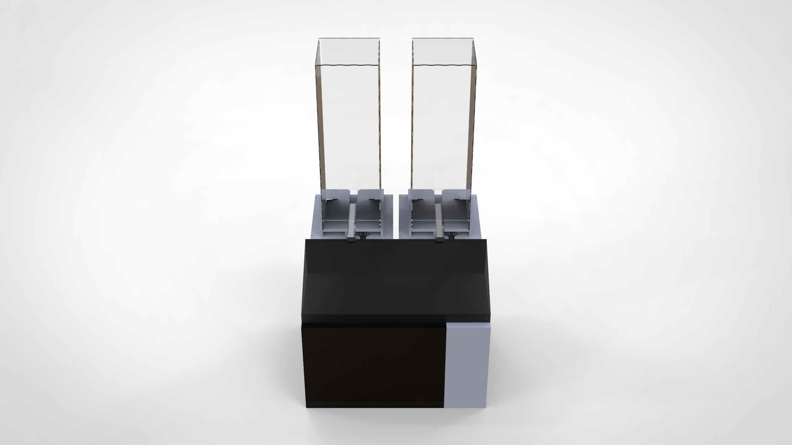
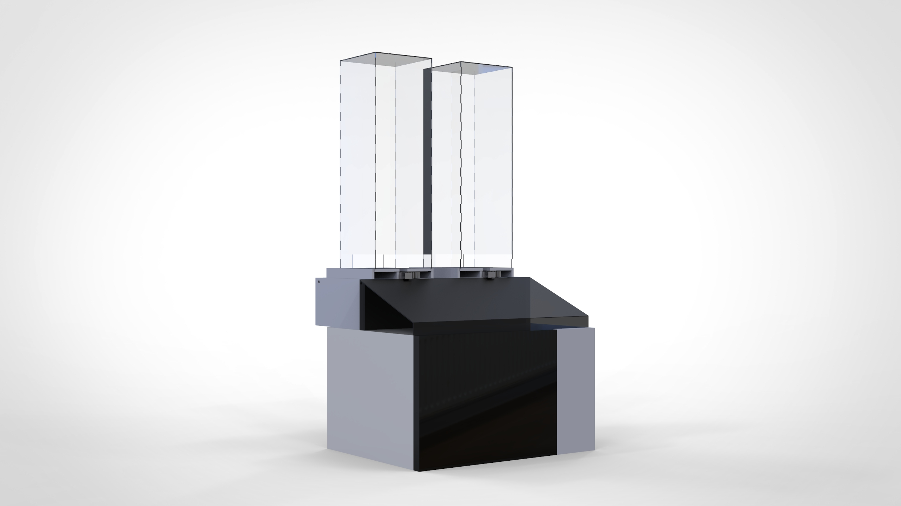
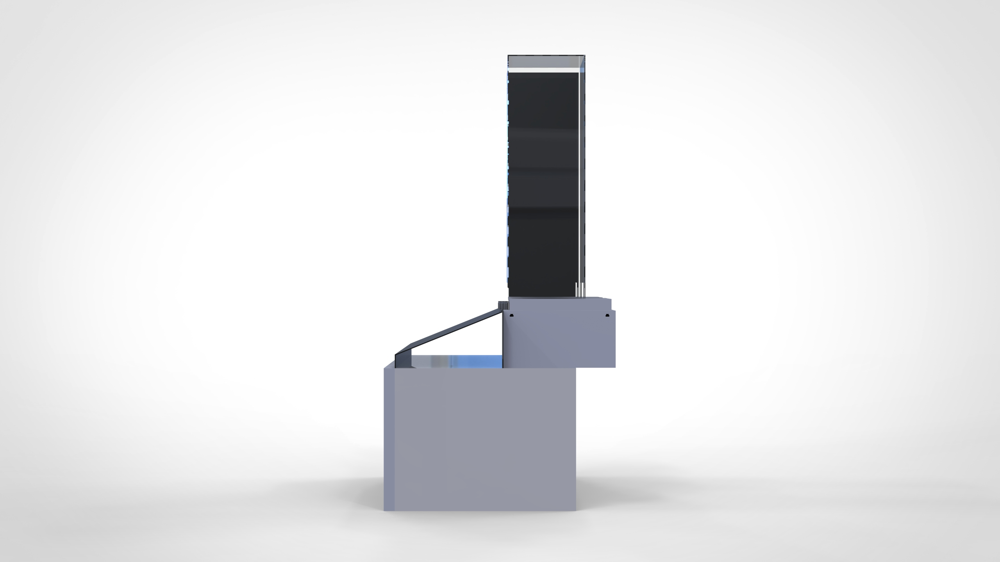
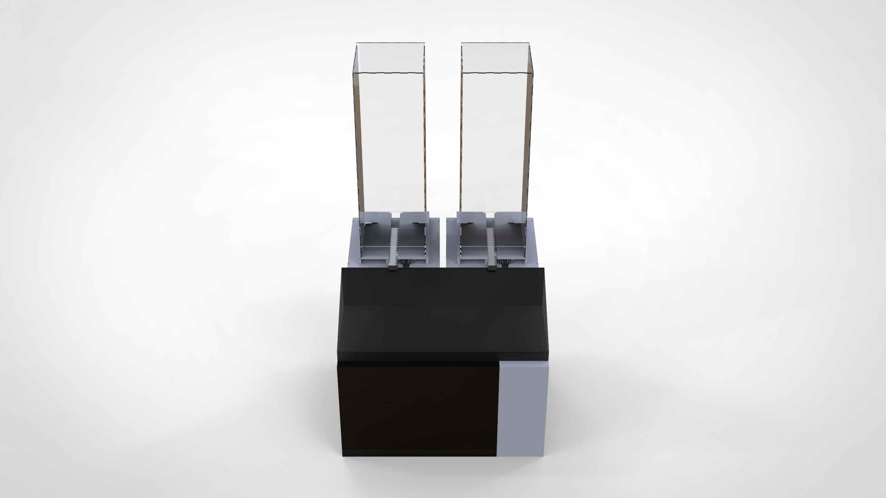
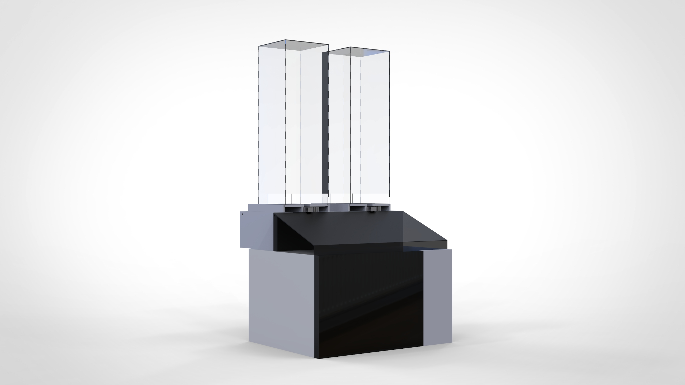
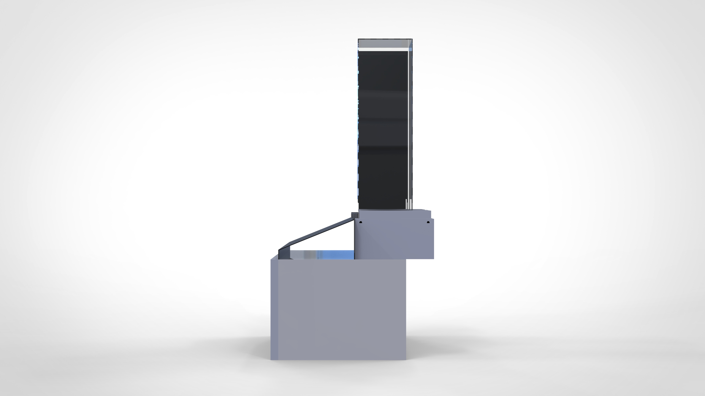

Problem
The popcorn business owners face difficulty in, providing fresh popcorn on-order, maintaining the proper sales data-logging system, which affects the efficiency of supply chain management, and an indication of malfunction if occurred. To overcome this a team underwent the process of finding a solution which is a smart popcorn kernel packets dispenser which should let out one packet for a single payment.
User
Technicians who will be refilling the kernel packets once it is over.
My Role
My role here was to fulfil the requirements of the team solving all the constraints such as single packet dispensing, efficient and faster way, a dispenser which can store up to 60 packets (30 per slot). The dispenser slots will be placed on the top of the microwave oven controlled by the payment process, which will automatically turn on once the payment is done. I was to design the dispenser which gives out the packet so that the customer can use the oven to bake the corn.
Design Process
The actuator chosen for dispensing was a motor. So a rotary to linear motion conversion mechanism was to be designed in a compact way. Various possible mechanisms like the crank and slotted lever, rack and pinion etc. Among which the rack & pinion mechanism was compact and most suitable. For the prototyping, the manufacturing was to be cheap and revocable based on the altering needs. The material chosen was acrylic and was decided to be laser cut. The design part was challenging due to the teeth feature in the edges of the acrylic to make the dispenser slots stronger to hold 30 packets. The design underwent many iterations during manufacturing to cater to the needs of the team. Ultimately the dispenser was